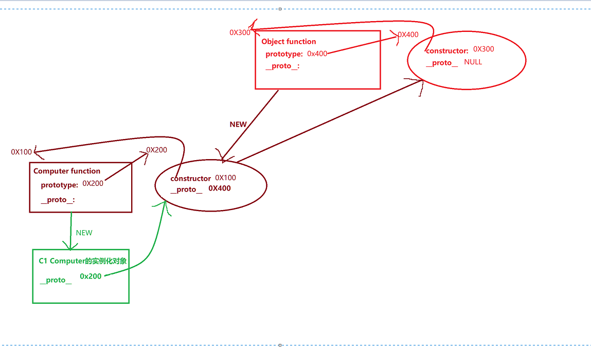
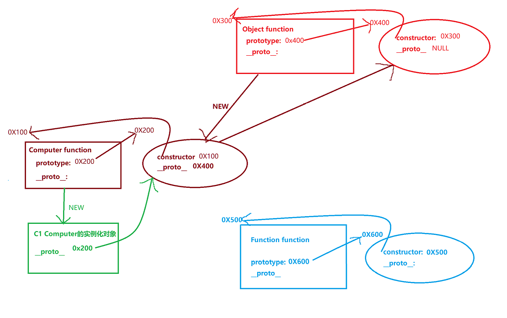

//以上是上次的mini原型链:主要有以下问题:函数对象自己的隐式原型对象__proto__没有搞明白;
添加Function function构造函数与其原型对象,其也是互相通过prototype和constructor互相指向
所有函数都是Function的实例化对象,Object和Computer两个构造函数都是由Function new出来的
又因为实例化对象的隐式原型__proto__指向其构造函数的显示原型prototype,所以Object和Computer的两个构造函数(对象)的隐式原型__proto__指向Function构造函数的原型对象prototype
而所有的普通对象都是Object构造函数的实例化对象,所以Function的prototype原型对象也是Object new出来的实例化对象
又因为实例化对象的隐式原型__proto__指向其构造函数的显示原型prototype,所以Function的prototype原型对象的隐式原型__proto__指向object的prototype
而Function这个构造函数比较特殊,理解为Function构造函数是由Function构造函数自己new出来的实例化对象
所以Function构造函数的隐式原型指向其构造函数(也是Function自己)的显示原型prototype
1 只有函数 有 显式原型对象prototype 2 所有对象的隐式原型__proto__指向 其 构造函数的显式原型对象prototype,除了object.prototype.__proto__(顶级对象Object的原型的隐式原型) = null; 到顶了 3 所有函数的原型对象 有 指向函数的属性constructor,指向其函数对象本身 4 Function函数的构造函数也是Function,自己是自己,也是自己妈,所以自己的隐式原型和显示原型指向相同; 4 无论怎么找,最后找到的都是顶级对象Object 的 原型对象